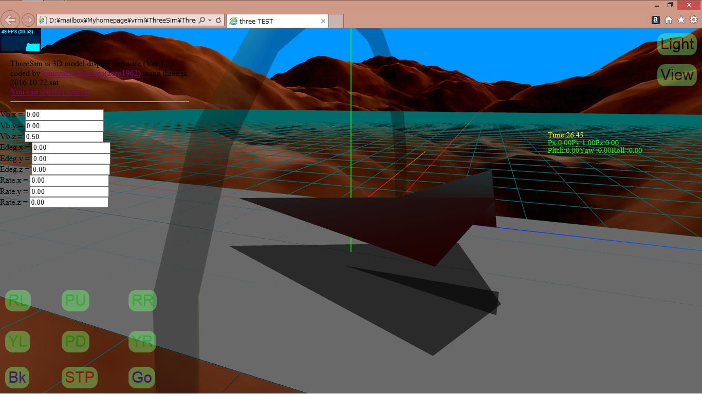

Three.js
JavaScript 3D
◎良いところ：
・特別な３Ｄ表示ビューアを必要としない。
・iPhoneでもPCでも同じデータが表示できる。
・コンパイル不要。
・お金がかからない。
・iOSの場合、画面をスライドして拡大縮小視点変更できます。
・PCの場合、マウス操作で拡大縮小視点変更できます。
・VRML/MMDのモデルは、BlenderでOBJ/MTL形式ファイルに変換することで表示できます。
□注意事項：
・IE10以下では、動作しません。
- Three.js 公式サイト
- Three.js Wiki 解説
-
Web ブラウザで動くとは思えない、凄い WebGL デモ・アプリ 65 個
- ThreeSim (太陽系)
-
 ThreeSim for Local PC run.